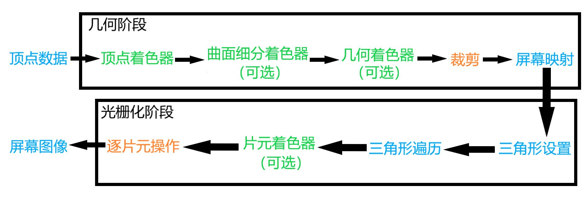

# 渲染管线
渲染管线（Rendering Pipeline）是计算机图形学中用于将三维场景转化为二维图像的一系列处理步骤。它是一个由多个阶段组成的流水线，每个阶段都负责对图形数据进行特定的操作和处理。
# 概念流水线
从概念上可以分为 3 个阶段：应用阶段、几何阶段、光栅化阶段
- 应用阶段
在 CPU 中进行。开发者拥有这个阶段的绝对控制权。这一阶段主要有三个任务：场景（模型、相机、特效等）、设置渲染状态（shader、材质贴图、纹理）、遮挡剔除。这一阶段的输出结果是渲染所需的几何信息，即渲染图元。 - 几何阶段
通常在 GPU 中进行。用于处理所有与我们要绘制的几何相关的东西。这一阶段的输出结果是屏幕空间的二维顶点坐标，每个顶点对应的深度值、着色器等信息。 - 光栅化阶段
在 GPU 中进行。使用上一个阶段传递的数据来生成屏幕上的像素，并渲染出最终的图像。它需要对上一个阶段得到的逐顶点数据（例如：纹理坐标、顶点颜色等）进行差值，然后在进行逐图像处理。

这里的流水线均是概念流水线，是我们为了给一个渲染流程进行基本的功能划分而提出来的。下面要介绍的 GPU 流水线，则是硬件真正用于实现上述概念的流水线。
# CPU 和 GPU 之间的通信
渲染流水线的起点是 CPU, 即应用阶段。应用阶段大致可分为 3 个阶段：把数据加载到显存中、设置渲染状态、调用 DrawCall
- 把数据加载到显存中
所有的数据都需要从硬盘加载到内存中，然后，将网格和纹理等数据加载到显存中。数据加载到显存后，内存中的部分数据就可以移除了，对于另外一部分数据，CPU 还需要访问它们（例如：获取网格数据实现碰撞检测、基于网格的自动寻路等）。 - 设置渲染状态
渲染状态定义了场景中的网格是怎样被渲染的。例如：使用哪个顶点着色器 (Vertex Shader) / 片元着色器 (Fragment Shader)、光源属性、材质等。如果我们没有更改渲染状态，那么所有的网格都将使用同一种渲染状态。装备好上述所有数据后，CPU 需要调用一个命令通知 GPU 进行渲染，这个渲染命令称之为 DrawCall - 调用 DrawCall
相信接触过渲染优化的读者应该都听说过 Draw Call。实际上，DrawCall 就是一个命令，它的发起方是 CPU，接收方是 GPU。这个命令仅仅会指向一个需要被渲染的图元列表，而不会再包含任何材质信息，这是因为我们已经在上一个阶段中完成了。
当给定了一个 DrawCall 时，GPU 就会根据渲染状态（例如材质、纹理、着色器等）和所有输入的顶点数据来进行计算，最终输出成屏幕上显示的那些漂亮的像素。而这个计算过程，就是我们接下来要讲的 GPU 流水线。
# GPU 流水线
当 GPU 从 CPU 那里得到渲染命令后，就会进行一系列流水线操作，最终把图元渲染到屏幕上。
GPU 渲染流水线如下图所示，颜色表示不同阶段的可配置性或可编程性：
- 绿色：流水线阶段是完全可编程控制的
- 橙色：流水线阶段可以配置但是不可编程
- 蓝色：流水线阶段是由 GPU 固定实现的（开发者没有控制权）
- 除可选择的阶段以外，其他阶段必须实现
- 部分名称在 OpenGL 和 DirectX 中不相同，本篇以 OpenGL 为例

- 顶点数据：这些数据是由应用阶段加载到显存中，再由 DrawCall 指定的。
几何阶段 - 顶点着色器 (Vertex Shader)：完全可编程，通常用于实现顶点的空间变换、顶点着色等功能。
- 曲面细分着色器 (Tessellation Shader)：是一个可选的着色器，它用于细分图元。
- 几何着色器 (Geometry Shader)：同样是一个可选的着色器，它可以被用于执行逐图元 (Per-Primitive) 的着色操作，或者被用于产生更多的图元。
- 裁剪 (Clipping)：这一阶段的目的是将那些不在摄像机视野内的顶点裁剪掉，并剔除某些三角图元的面片。这个阶段是可配置的。例如，我们可以使用自定义的裁剪平面来配置裁剪区域，也可以通过指令控制裁剪三角图元的正面还是背面。
- 屏幕映射 (Screen Mapping)：这一阶段是不可配置和编程的，它负责把每个图元的坐标转换到屏幕坐标系中。
光栅化阶段 - 三角形设置 (Triangle Setup)：固定函数 (Fixed-Function) 的阶段。
- 三角形遍历 (Triangle Traversal)：固定函数 (Fixed-Function) 的阶段。
- 片元着色器 (Fragment Shader)：完全可编程，它用于实现逐片元 (Per-Fragment) 的着色操作。
- 逐片元操作 (Per-FragmentOperations)：负责执行很多重要的操作，例如修改颜色、深度缓冲、进行混合等，它不是可编程的，但具有很高的可配置性。
接下来将对主要的流水线进行更详细的解释。
# 顶点着色器
顶点着色器 (Vertex Shader) 是流水线的第一个阶段，它的输入来自于 CPU。顶点着色器的处理单位是顶点，输入进来的每个顶点都会调用一次顶点着色器。顶点着色器本身不可以创建或者销毁任何顶点，而且无法得到顶点与顶点之间的关系。例如，我们无法得知两个顶点是否属于同一个三角网格。但正是因为这样的相互独立性，GPU 可以利用本身的特性并行化处理每一个顶点，这意味着这一阶段的处理速度会很快。
顶点着色器需要完成的工作主要有：坐标变换和逐顶点光照。除此以外，还包括后续阶段所需的其他数据（例如：顶点的颜色）。
坐标变换：把顶点坐标从模型空间转换到齐次裁剪空间。顶点着色器可以在这一步中改变顶点的位置，这在顶点动画中是非常有用的。例如，我们可以通过改变顶点位置来模拟水面、布料等。这个坐标在输出后会在硬件中做进一步处理（在硬件中做透视除法，最终得到归一化的设备坐标）。
OpenGL 和 Unity 使用相同的归一化的设备坐标 (Normalized Device Coordinates, NDC)，NDC 是以一个立方体为基础的，它的 z 分量范围在 [-1, 1] 之间，而在 DirectX 中，NDC 的 z 分量范围是 [0, 1]。顶点着色器可以有不同的输出方式。最常见的输出路径是经光栅化后交给片元着色器进行处理。而在现代的 Shader Model 中，它还可以把数据发送给曲面细分着色器或几何着色器。
# 裁剪
裁剪 (Clipping) 是为将那些不在摄像机视野内的顶点裁剪掉。
一个图元和摄像机视野的关系有 3 种：完全在视野内、部分在视野内、完全在视野外。
- 完全在视野内的图元就继续传递给下一个流水线阶段（在视野范围内但被遮挡的物体也会传递）
- 完全在视野外的图元不会继续向下传递，因为它们不需要被渲染。
- 部分在视野内的图元需要进行处理，这就是裁剪。例如，一条线段的一个顶点在视野内，而另一个顶点不在视野内，那么在视野外部的顶点应该使用一个新的顶点来代替，这个新的顶点位于这条线段和视野边界的交点处。
# 屏幕映射
屏幕映射 (Sereen Mapping) 的任务是把每个图元的 x 和 y 坐标转换到屏幕坐标系 (Sereen Coordinates) 下。屏幕映射得到的屏幕坐标决定了这个顶点对应屏幕上哪个像素以及距离这个像素有多远。这一步输入的坐标仍然是三维坐标系下的坐标（范围在单位立方体内）。屏幕坐标系是个二维坐标系，它和我们用于显示画面的分辨率有很大关系。
屏幕映射的过程实际是一个缩放的过程。在这个过程中 Z 轴不做处理。屏幕坐标系和 z 坐标一起构成了一个坐标系，叫做窗口坐标系 (Window Coordinates)。这些值都会传递到光栅化阶段。
屏幕坐标系在 OpenGL 和 DirectX 之间的差异问题：OpenGL 把屏幕的左下角当成最小的窗口坐标值（右上角为最大值），而 DirectX 则定义了屏幕的左上角为最小的窗口坐标值（右下角为最大值）。
# 三角形设置
从上一个阶段（几何阶段）输出的信息是屏幕坐标系下的顶点位置以及和它们相关的额外信息，如深度值 (z 坐标)、法线方向、视角方向等。光栅化阶段有两个最重要的目标：计算每个图元覆盖了哪些像素，以及为这些像素计算它们的颜色。
光栅化的第一个流水线阶段是三角形设置 (Triangle Setup)。这个阶段会计算光栅化一个三角网格所需的信息。具体来说，上一个阶段输出的都是三角网格的顶点，即我们得到的是三角网格每条边的两个端点。但如果要得到整个三角网格对像素的覆盖情况，我们就必须计算每条边上的像素坐标。为了能够计算边界像素的坐标信息，我们就需要得到三角形边界的表示方式。这样一个计算三角网格表示数据的过程就叫做三角形设置。它的输出是为了给下一个阶段做准备。
# 三角形遍历
三角形遍历 (Triangle Traversal) 阶段将会检查每个像素是否被一个三角网格所覆盖。如果被覆盖的话，就会生成一个片元 (fragment)。而这样一个找到哪些像素被三角网格覆盖的过程就是三角形遍历，这个阶段也被称为扫描变换 (Scan Conversion)。
三角形遍历阶段会根据上一个阶段（几何阶段）的计算结果来判断一个三角网格覆盖了哪些像素，并使用三角网格 3 个顶点的顶点信息对整个覆盖区域的像素进行插值。对应像素会生成一个片元。
这一步的输出就是得到一个片元序列。一个片元并不是真正意义上的像素，而是包含了很多状态的集合，这些状态用于计算每个像素的最终颜色。这些状态包括了 (但不限于) 它的屏幕坐标、深度信息，以及其他从几何阶段输出的顶点信息，例如：法线、纹理坐标等。
# 片元着色器
片元着色器 (Fragment Shader) 是另一个非常重要的可编程着色器阶段。在 DirectX 中，片元着色器被称为像素着色器 (Pixel Shader)，但片元着色器是一个更合适的名字，因为此时的片元并不是一个真正意义上的像素。
这一阶段可以完成很多重要的渲染技术，其中最重要的技术之一就是纹理采样。为了在片元着色器中进行纹理采样，我们通常会在顶点着色器阶段输出每个顶点对应的纹理坐标，然后经过光栅化阶段对三角网格的 3 个顶点对应的纹理坐标进行插值后，就可以得到其覆盖的片元的纹理坐标。
一般情况下，片元着色器仅能影响单个片元，不能将任何结果发送给它的邻居们。有一个例外情况：片元着色器可以访问到导数信息。

# 逐片元操作
逐片元操作 (Pe-Fragment Operations) 是 OpenGL 中的说法，在 DirecX 中，这一阶段被称为输出合并阶段 (Output-Merger)。Merger 这个词可能更容易让读者明白这一步骤的目的：合并。而 OpenGL 中的名字可以让读者明白这个阶段的操作单位，即是对每一个片元进行一些操作。逐片元操作阶段是高度可配置性的，我们可以设置每一步的操作细节。
这一阶段的主要任务：
- 决定每个片元的可见性，这涉及了很多测试工作（例如：模板测试、深度测试）
- 如果一个片元通过了所有的测试，就需要把这个片元的颜色值和已经存储在颜色缓冲区中的颜色进行合并，或者说是混合。
- 如果一个片元没有通过测试，那么它就会被舍弃，这就导致之前那么多的工作都白费了。
Unity 给出的渲染流水线中，它的深度测试是在片元着色器之前的（Early-Z 技术）这样就可以提前知道那些片元是被舍弃的，从而减少性能浪费。提前进行测试的检验结果可能与片元着色器中的一些操作冲突，如果发生冲突就会禁用提前测试。这样会使性能下降。
测试的过程非常复杂，而且不同的图形学接口的实现细节也不尽相同。
当模型的图元经过了上面层层计算和测试后，就会显示到我们的屏幕上。我们的屏幕显示的就是颜色缓冲区中的颜色值。但是，为了避免我们看到那些正在进行光栅化的图元，GPU 会使用双重缓冲 (Double Buffering) 的策略。这意味着，对场景的渲染是在幕后发生的，即在后置缓冲 (Back Buffer) 中。一旦场景已经被渲染到了后置缓冲中，GPU 就会交换后置缓冲区和前置缓冲 (Front Buffer) 中的内容，而前置缓冲区是之前显示在屏幕上的图像。由此，保证了我们看到的图像总是连续的。
# 模版测试
模板测试，与之相关的是模板缓冲（Stencil Bufer）。模板缓冲、颜色缓冲、深度缓冲几乎是一类东西。如果开启了模板测试，GPU 首先读取 （使用读取掩码）模板缓冲区中该片元位置的模板值，然后将该值和读取（使用读取掩码）到的参考值进行比较，这个比较函数可以由开发者指定，例如：小于等于时舍弃该片元，或者大于等于时舍弃该片元。如果这个片元没有通过测试，该片元就会被舍弃。不管一个片元有没有通过模板测试，我们都可以根据模板测试和之后的深度测试结果来修改模板缓冲区，这个操作也是由开发者指定的。模板测试通常用于限制渲染区域，或者渲染阴影，轮廓渲染等。
# 深度测试
如果开启了深度测试，GPU 会把该片元的深度值和已经存在于深度缓冲中的深度值进行比较。这个比较函数也是可由开发者设置的，例如小于时舍弃该片元，或者大于时舍弃该片元。通常这个比较函数是小于等于，即如果这个片元的深度大于当前深度缓冲区中的值，那么就舍弃它。这是因为我们总想只显示出离摄像机最近的物体，而那些被其他物体遮挡的就不需要出现在屏幕上。和模板测试不同的是，如果一个片元没有通过深度测试，它就没有权利更改深度缓冲区的值。如果一个片元通过了测试，那么开发者可以指定是否要用这个片元的深度值覆盖所有的深度值。
# 合并混合
渲染过程是一个物体接着一个物体画到屏幕上，而每个像素的颜色信息被储存在一个名为颜色缓冲的地方。因此，当我们执行这次渲染时，颜色缓冲中往往已经有了上次染之后的颜色结果，那么，我们使用这次渲染得到的颜色完全覆盖掉之前的结果还是进行其他处理，就是合并需要解决的。
对于不透明物体，开发者可以关闭混合 (Blend) 操作。这样片元着色器计算得到的颜色值就会之间覆盖掉颜色缓冲区中的像素值。但对于半透明物体，就需要混合操作来让这个物体看起来是透明的。
# 一些常见的概念
# 空间变换
模型空间 -- 模型变换 --> 世界空间 -- 视图变换 --> 相机空间 -- 裁剪矩阵 --> 裁剪空间 -- 齐次除法 --> 归一化设备坐标 -- 映射到窗口 --> 屏幕空间
模型变换、视图变换、裁剪矩阵 整合到了一个从模型空间到裁剪空间的矩阵中，在顶点着色器中使用
模型空间：又称对象空间
相机空间：相机的模型空间
视图变换：通常在建立场景时设置一次
裁剪矩阵：又称投影矩阵，调整缩放和远 / 近裁剪面，准备投影
裁剪空间：又称规则观察体空间，使用四维坐标缩放进行投影和裁剪
齐次除法：z、y、z 除以 w，由图形 API 执行
映射到窗口：按窗口大小缩放，按窗口中心偏移，由图形 API 执行
屏幕空间：二维 xy 值是像素坐标，z 和 w 用于深度缓冲或透视校正
# OpenGL, DirectX, Vulkan
图像应用编程接口。应用程序向接口发送渲染命令，这些接口会依次向显卡驱动发送渲染命令，显卡驱动将命令翻译成 GPU 能看懂的语言，同时也负责吧纹理等数据转换成 GPU 所支持的格式。
# HLSL, GLSL, CG, SPIR-V
- HLSL(High Level Shading Language)
微软的 DirectX 的专用语言。微软提供着色器的编译，不同平台的编译结果一致，但是 HLSL 仅能在微软自己的产品中使用。 - GLSL(OpenGL Shading Language)
跨平台语言，可以在很多平台上运行。但是这种跨平台性是由于 OpenGL 没有提供着色器编译器，而是由显卡驱动来完成着色器的编译工作。好处在于供应商可以发挥出显卡的最大作用，但这也意味着 GLSL 的编译结果将取决于供应商，这可能会导致编译结果不一致。 - CG(C for Graphic)
NVIDIA 提供的语言，真正的跨平台语言。它会根据不同的平台编译成相应的中间语言。CG 语言的跨平台性很大原因取决于与微软的合作，这也导致 CG 语言的语法和 HLSL 很像，CG 可以无缝移植 HLSL 代码。缺点是可能无法完全发挥出 OpenGL 的特性。 - SPIR-V(Standard Portable Intermediate Representation – Vulkan)
由 Khronos Group 制定，用作 Vulkan 和 OpenCL 的着色器与计算内核的通用底层格式。中间着色语言，通常不会手写 SPIR-V，常从 GLSL/HLSL 编译。
在 Unity Shader 中可以使用 HLSL, GLSL, CG 这三种语言，但是尽管语法几乎一样，这些语言并非完全对应。例如：有些 CG 语法在 Unity Shader 中是不支持的。
# Draw Call
Draw Call 就是 CPU 调用图像编程接口，例如：OpenGL 中的 glDrawElements 或者 DirectX 中的 DrawIndexedPrimitive 命令，以命令 GPU 进行渲染的操作。
- 性能问题的元凶
Draw Call 中造成性能问题的是 CPU - CPU 和 GPU 的并行工作
在 CPU 和 GPU 的并行工作中，有一个命令缓冲区，其中包含一个命令队列，命令缓冲区中的命令有很多种，Draw Call 是其中之一，还有改变渲染状态、改变着色器等。GPU 处理命令的速度要快于 CPU 发送命令的速度。 - Draw Call 为什么会影响帧率
在每次调用 DrawCall 之前，CPU 需要向 GPU 发送很多内容，包括数据、状态和命令等。在这一阶段，CPU 需要完成很多工作，例如检查渲染状态等。而一旦 CPU 完成了这些准备工作，GPU 就可以开始本次的渲染。GPU 的渲染速度往往快于 CPU 提交命令的速度。如果 Draw Call 的数量太多，CPU 就会把大量时间花费在提交 Draw Call 上，造成 CPU 的过载。 - 减少 Draw Call
减少 Draw Call 的方法有很多，本篇仅讨论批处理技术。
批处理技术用于优化渲染性能，通过减少渲染调用的次数来提高游戏的运行效率。CPU 每次调用渲染前都需要准备大量的数据（除了物体本身的数据以外，还有很多额外的操作），多次重复这一过程会带来很大的性能消耗，所以，将一些物体合并到一起处理，然后再调用渲染，这样就会提高效率。
# CPU 与 GPU 并行工作
如果需要 CPU 和 GPU 并行工作，就需要使用命令缓冲区（Command Buffer），这个缓冲区是代码可控的
命令缓冲区包含了一个缓冲队列，由 CPU 向其中添加命令，而由 GPU 从中读取命令，添加和读取过程是相互独立的。命令缓冲区使得 CPU 和 GPU 可以相互独立工作。当 GPU 需要渲染一些对象时，它就可以从命令队列中取出一个命令并执行
命令缓冲区有很多种类，Draw Call 就是一种。其他命令还有改变渲染状态等
# 固定管线渲染
固定函数的流水线，这是仅在一些很旧的 GPU 上才有渲染流水线，这种流水线仅可进行一些配置，不可编程，现代 GPU 已经完全舍弃了这种流水线。
# Unity 的渲染流程
场景遍历 (CPU) -> 可见性判断（视锥体剔除 + 遮挡剔除）(CPU) -> 批处理和命令缓冲构建 (CPU) -> 命令提交 (CPU -> GPU) -> GPU 执行渲染流水线
当场景复杂到 Unity 无法仅靠 CPU 剔除时（例如动态遮挡或摄像机快速移动），才可能用到 GPU 来辅助剔除，但依然不属于 GPU 的渲染阶段，而是借助 GPU 的计算结果（如深度层次缓冲 Hierarchical Z-Buffer）进行辅助判断。
# Shader
Shader 所在的阶段是渲染流水线的一部分，Shader 是:
- GPU 流水线上些可高度编程的阶段，而由着色器编译出来的最终代码是会在 GPU 上运行的（对于固定管线的渲染来说，着色器有时等同于一些特定的渲染设置）
- 有一些特定类型的着色器，如顶点着色器、片元着色器等
- 依靠着色器控制流水线中的渲染细节，例如用顶点着色器来进行顶点变换以及传递数据，用片元着色器来进行逐像素的渲染。
要得到出色的游戏画面是需要包括 Shader 在内的所有渲染流水线阶段的共同参与才可完成：设置适当的渲染状态，使用合适的混合函数，开启还是关闭深度测试 / 深度写入等。
Unity 为我们提供了一个既可以编写着色器，又可以设置渲染状态的地方: Unity Shader